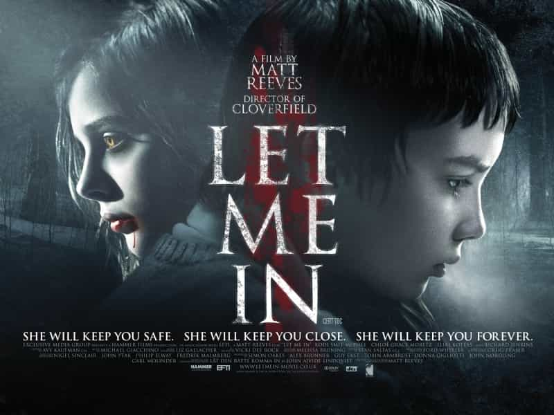
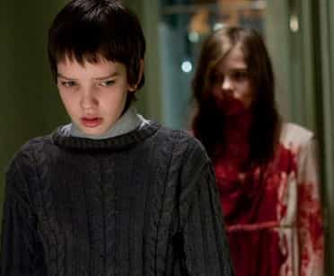

< < < Back
Letting Women Into Your Life – Return Of Kings
I am probably older than the average Return of Kings reader. As my bio reads, I have been married twice. I have had some very difficult experiences from my marriages: I have been cheated on, left for another man, had money taken from me by a betraying wife, had large amounts of money squandered in secret, been infected with an STI.
My initial plan for this post was to relate one of the many marriage horror stories I have experienced. However, the more I planned this post, the more my thoughts moved from a micro level (my marriage horror stories) to a macro level (marriage IS a horror story). It’s not that my stories are unique, it’s that my stories are typical.
As I contemplated marriage AS a horror story, one movie in particular stood out as the perfect analogy for marriage: Let Me In. If you have not seen the movie, spoiler alert. I am going to discuss the plot and give away the ending.
Story Line

The movie title refers to the fact that a vampire cannot enter a dwelling unless invited. If a vampire enters a dwelling uninvited, it will die. Once invited in, the vampire may come and go at will.
A little girl, Abby, and her father move into the apartment next door to Owen, an unhappy, bullied 12 year old whose parents are in the process of divorcing. Abby is an odd child. She only comes out at night, and she is always bare foot, despite the cold temperatures and snow on the ground. Abby and Owen become friends. The movie progresses, and we discover Abby is a very old vampire. Abby’s father is not her father, but a boy she befriended many years ago. Being human, he continued to age while Abby has not. Abby’s father murders people and drains their blood to feed Abby.
Abby’s “father” crashes a car during a botched murder, and he pours acid on his face to avoid being identified by police. Abby learns of this and goes to his hospital. She asks him to invite her into his room, but he cannot talk as a result of dousing himself with acid. He understands she cannot enter without his permission and dutifully leans out the window to allow Abby to drink his blood. He then falls to his death.
Abby now becomes closer to Owen. She asks to enter his apartment, and he challenges her to enter without the invitation. He refuses, but she enters anyway. She begins to bleed until Owen gives her the verbal invite to save her life. Fast forward a bit, and she saves his life when local bullies attempt to kill him.
The closing scene is Owen on a train, leaving town with a large trunk during the day. He taps on the trunk and Abby taps back from the inside. Owen is starting the cycle anew having replaced her “father”.
The Analogy

This story is an absolutely beautiful analogy for marriage as we know it today, particularly in the Western world. The husband’s role is to labor and sacrifice in order to provide for the wife’s desires.
An interesting aspect of the analogy is that two characters represent the husband: Owen and the father.
The father lives and exists to serve Abby. He is getting older and less able to provide for her needs. His last acts are selfless and sacrificial: he disfigures himself so the police cannot quickly identify him and find Abby. He is unable to invite her into his hospital room because he cannot talk, so he dutifully leans out the window to allow Abby to drain him. He gives his last bit of life for her. Completely drained, he is discarded and Abby moves on to find a replacement.
Owen represents the husband at the beginning of the marriage. He is young and full of potential. He will serve Abby well for many years. His labor and efforts will not be his own but serve her desires and needs. When he becomes older and less able to meet her needs, he will be replaced, just as he replaced the father.
Abby represents the wife. Everything and everyone exists to serve her. She finds someone to cater to those desires. Once that person is unable to serve her or she finds someone that can server her better, she drains the last bit of life and resources from the first and moves on to the new provider.
The Critical Decision Point
A critical point of this analogy is the limitation of the vampire to enter a dwelling without being invited in.
As you get older, there will be many women wanting to latch onto you after riding the carousel. They will be knocking, asking for that invitation to be part of your life. When this happens, remember this movie, remember Owen, remember Abby’s “father”.
Be very, very careful of who you let in.
Read Next: Expensive Woman Seeks Retarded Millionaire


{kind=link}
{kind=link}
{kind=link}